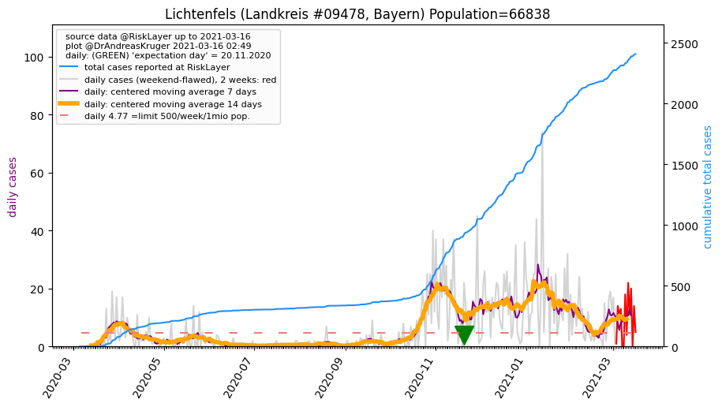
")
")
")
")
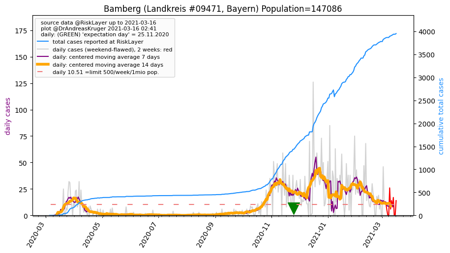
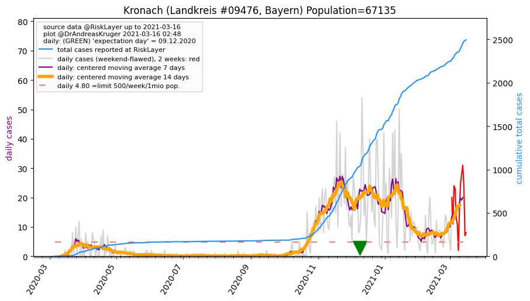
")
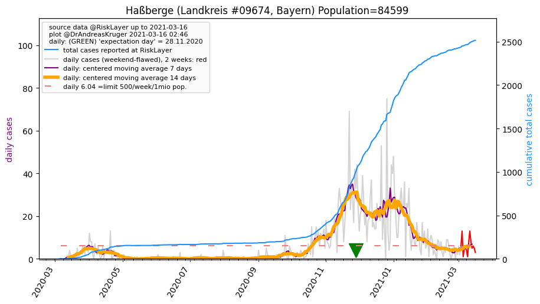
")
")
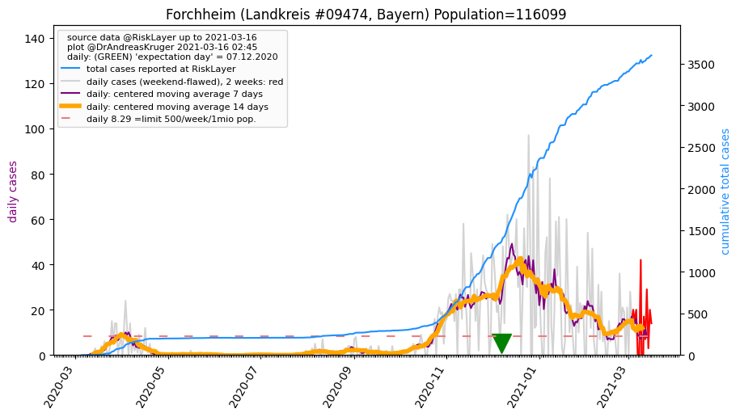
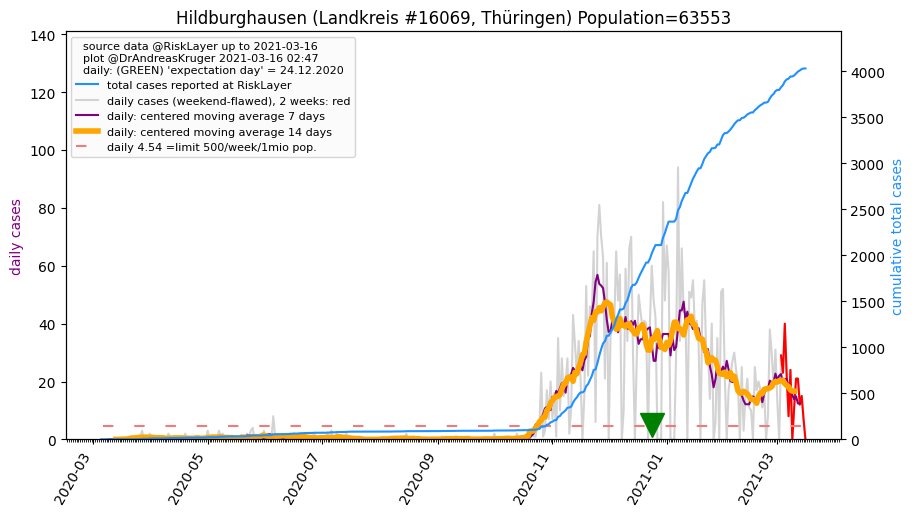
| Lichtenfels_LK (0.0 km) 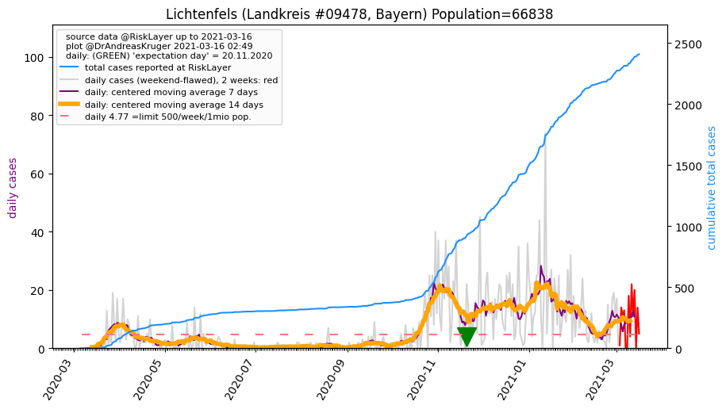 |
Coburg_KS (20.4 km) |
Coburg_LK (21.6 km) |
Kulmbach_LK (26.1 km) |
| Bamberg_KS (29.2 km) |
Bamberg_LK (29.3 km) 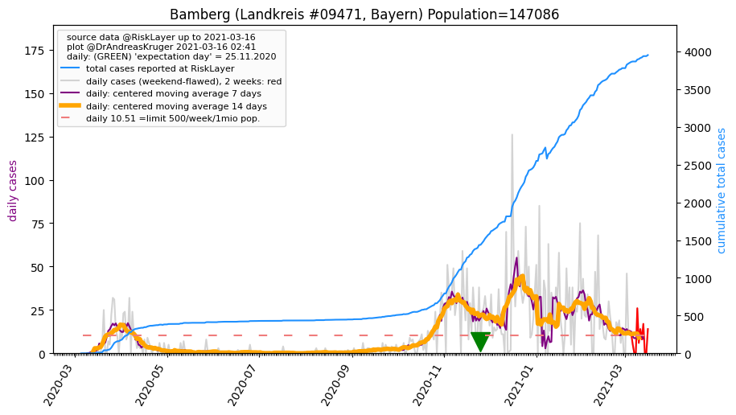 |
Kronach_LK (30.4 km) 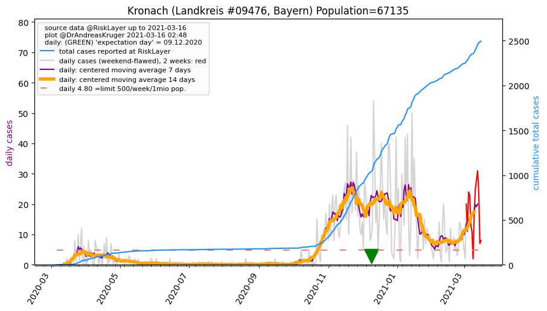 |
Sonneberg_LK (34.0 km) |
| Haßberge_LK (36.9 km) 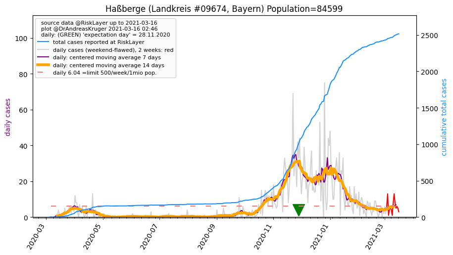 |
Bayreuth_KS (38.6 km) |
Bayreuth_LK (40.2 km) |
Forchheim_LK (43.4 km) 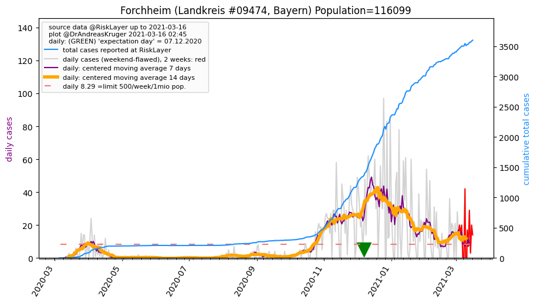 |
| Hildburghausen_LK (45.3 km) 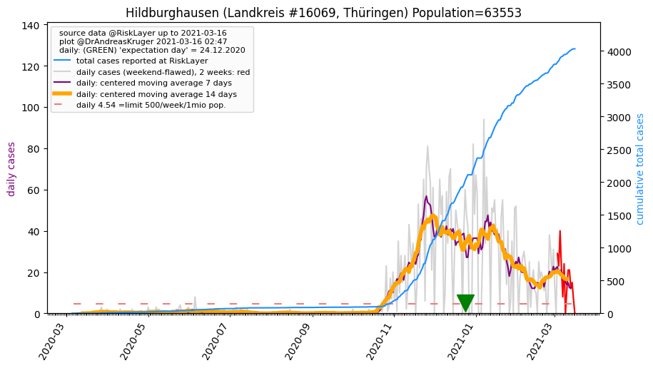 |
All plots are regenerated with new data every night. Beware this temporary hotspot is an experimental page - it might get removed, so please do not link to it. Instead link to project http://tiny.cc/cov19de.